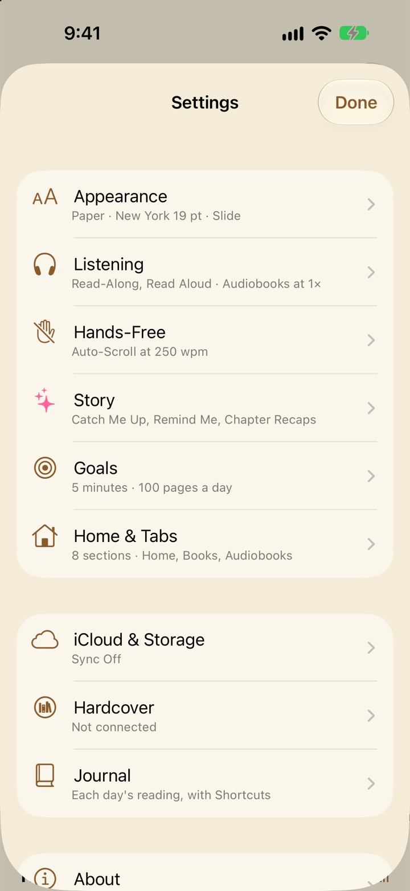
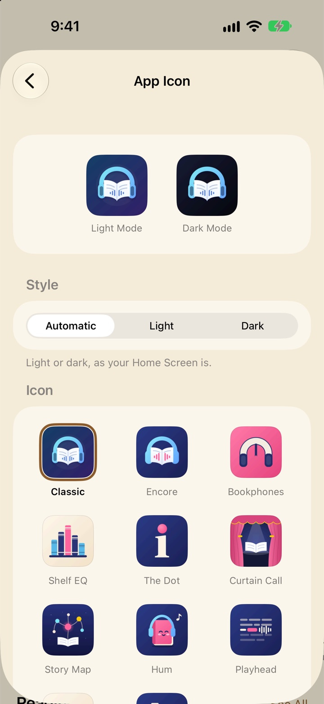

Every setting
A complete tour of Libretto’s Settings, page by page in the order the app shows them: what each setting does, the choices it has, how it starts out, and where else you can change it. The tag beside a setting’s name is how it’s set when you first open Libretto.
Finding your way around
Every tab (Home, Books, Audiobooks and the rest) has a ⋯ button at the top. Settings is the last item in its menu. Tap Done to close Settings again.
While you’re reading, you don’t have to leave the book. Tap Aa in the book’s menu for its Appearance page, and tap More in Settings at the bottom. The whole of Settings opens over the page, in the book’s own colors, and closing it puts you right back where you were.

The first page is in three groups:
- How you read: Appearance, Listening, Hands-Free, Story, Goals, and Home & Tabs.
- Connections: iCloud & Storage, Hardcover, Journal, and Apple Watch and Apple TV when you have them.
- About: the version, What’s New, Tips & Guide, privacy and support.
Under each row is a summary, like “Paper · New York 19 pt · Slide” under Appearance or “Sync On” under iCloud & Storage. Settings that need a word of explanation have an ⓘ beside them: tap it and a short note pops up.
Appearance
Settings → Appearance is how Libretto and your books look. The same page, minus App Theme and App Icon, is the Aa sheet in a book (see the Aa sheet), so you can change it while you read and watch the page change underneath.
Around your books

- App Theme System
- How Libretto looks outside a book: Home, your library and Settings. System follows your device’s light or dark mode; Light and Dark stay put whatever the device does; Sepia is warm paper with a brown tint; Midnight is slate blue with yellow. A book keeps its own Page Theme whichever you pick. Also: a Focus filter can switch it while a Focus is on (see Widgets, Siri and Shortcuts).
- App Icon Classic
- Libretto’s icon on your Home Screen. Its page shows your icon in Light and Dark Mode, then Style: Automatic (light or dark, as your Home Screen is; the default), Light (the light icon, in Dark Mode too) or Dark (the dark icon, in Light Mode too). Then pick from eleven icons: Classic, Encore, Bookphones, Shelf EQ, The Dot, Curtain Call, Story Map, Hum, Playhead, Ribbon and Two-Book L. The icon changes straight away, and iOS confirms it with an alert.
Page Theme
- Page Theme Paper
- The colors of your books’ pages, and of the sheets that open over them. Five light themes (Paper, Sepia, Stone, Rose and Sage) and five dark ones (Night, Slate, Cocoa, Forest and Black). Also: Aa in a book, the Set Page Theme shortcut, and a Focus filter.
Text
For ebooks. PDFs have their text fixed in place, so these don’t apply to them.
- Text size 19 pt
- Smaller and Larger either side of the size, from 12 to 34 points. Also: the Set Text Size and Make Text Bigger or Smaller shortcuts.
- Font New York
- Its own page, with a few lines in the font you’ve chosen at the top. Original uses the fonts the book came with. Then the reading fonts that come with iOS, each shown in itself. Serif: New York, Athelas, Charter, Georgia, Iowan Old Style, Palatino, Baskerville, Hoefler Text and Times New Roman. Sans serif: San Francisco, Rounded, Seravek, Avenir Next and Optima.
- Line Spacing Normal
- Compact, Normal or Relaxed. Also: the Set Line Spacing shortcut.
- Justify Text Off
- On, lines stretch to an even right edge, like a printed book. Off, the right edge is ragged, which keeps the spacing between words even.
Layout and page turns
Layout opens a page of its own. Its row says how pages are laid out now, or “Scrolling” when Page Turns is set to Scroll.
- Pages Automatic
- Automatic follows how you hold the device: one page upright, two side by side when it’s turned and there’s room. On iPhone Duo it follows the fold. One Page is always one page. Two Pages shows two whenever the screen is wide enough, even upright on an iPad or the Duo’s inside display. Your place is kept whenever the screen changes shape. With Page Turns set to Scroll, books are one scrolling column whatever this says.
- Page Controls: Automatic On
- The page controls are the menu button, play and pause while reading along, and big next and previous page buttons. Automatic puts them down the right edge when you hold the device sideways, where your thumb rests, and along the bottom when it’s upright. Turn Automatic off to choose for Landscape and Portrait yourself: Right, Bottom or Off. Where they’re off, tap the edges of the page or swipe to turn, and tap the middle for the menu. Also: ⋯ → Page Controls in a book switches them on or off for the way you’re holding it.
- Lock Page Off
- On, only the page controls’ buttons work while they’re showing. Taps and swipes on the page are ignored, so holding the device never turns a page by accident. Off, the page works as usual too. Either way, a long press still selects text. Also: ⋯ → Lock Page in a book, while the page controls show.
- On iPhone Duo
- Only on an iPhone Duo: what each posture does (Half Open, Like a Book: two pages; Fully Open: one wide page; Tabletop: the page up top and controls below; Closed: one page on the outside screen). The page controls never show in tabletop posture, where the bottom half has its own.
- Glass Deck Off
- iPhone Duo in tabletop posture: left untouched for 3 seconds, the controls on the bottom half fade into dark glass that reflects the page standing above it. Touch anywhere to bring them back. Also: the deck’s own button, after the eye.
- Page Turns Slide
- Slide: each page slides across, the quickest. Curl: the page curls over like paper and follows your finger as you swipe. Scroll: no pages at all, just scroll down through the book; at the end of a chapter, keep pulling up to go on to the next.
The footer and Today’s Target Bar
- Page Footer Left in Chapter
- The line under the page. Left in Chapter and Left in Book give the pages and time left; Left Today is the pages still to read today, toward the book’s Finish By date if it has one, or else your Daily Page Goal; Chapter and Chapter and Book give the titles; Time is the time of day; or Nothing. Also: tap the footer while you read to step to the next one. Ebooks only.
- Today’s Target Bar On
- In a book with a Finish By date, a thin line along the bottom of the page fills as you read toward where you should be by tonight. The same line runs across the bottom of the book’s card on Home. The dot beside the switch picks its color from twelve, and each App Theme keeps its own: until you choose, it’s blue with System and Light, orange with Sepia, green with Dark and yellow with Midnight.
More on all of this in Reading.
Listening
Settings → Listening covers everything about hearing a book: reading along with a paired audiobook, Read Aloud with your device’s voices, how audiobooks play, and how much audio goes to your Apple Watch.

Read-Along
- Read Along When I Open a Paired Book On
- For a book paired with its audiobook. On, opening it reads along: the line being read is marked, the pages turn by themselves, and Play carries on from your place. Off, it opens as a plain book, and ⋯ → Read Along starts the narration when you want it. Opening a book from the Read-Along page always reads along.
- Mark the Line Being Read Dot
- A page of its own. Dot: a small dot in the margin, easy to find without covering any text. Highlight: a soft highlight behind the whole line, the most visible. Underline: a thin line under it. None: no marker, though the pages still turn with the narration.
- Color Subtle
- On the same page: the marker’s color. Subtle is the page’s own ink and highlighter, kept faint; Yellow, Orange, Red, Pink, Purple, Blue and Green stand out more. It’s the same for the dot, the highlight and the underline, and for Auto-Scroll’s reading guide.
- Turn Pages While Listening On
- On, you can look around the book while the narration plays on; Back to Narration takes you back to it. Off, the pages follow the narration until you pause it.
Read Aloud
- Read Aloud On
- For books without a paired audiobook: your device’s voices read the book aloud, marking the words as Read-Along does and turning the pages. It reads on with the screen locked, chapter after chapter, and the Lock Screen’s play and pause work it. On, a play button sits on the page controls and Play from Here is in the menu when you select a word. Off, you can still start it from ⋯ → Read Aloud in the book.
- Voice Automatic
- Automatic uses the most natural voice installed in your device’s language, or pick any installed voice. You can download more natural voices in the Settings app, under Accessibility → Spoken Content → Voices. Also: ⋯ → Read Aloud → Voice in a book.
- Speed 1×
- From 0.75× to 2×. Also: ⋯ → Read Aloud → Speed in a book.
- Hear a Sample
- Reads a sentence in the voice and speed you’ve chosen.
Audiobooks
How audiobooks play, and books reading along with theirs.
- Default Speed 1×
- The speed an audiobook starts at the first time you play it: 0.5×, 0.75×, 1×, 1.1×, 1.25×, 1.5×, 1.75×, 2×, 2.5× or 3×. Change one book’s speed in Now Playing and that book keeps its own.
- Skip Back 15 seconds
- 5, 10, 15, 30, 45, 60, 75 or 90 seconds. Used everywhere you skip: Now Playing, the mini player, the Lock Screen and Control Center, Read-Along’s controls and the Skip in Audiobook shortcut.
- Skip Forward 30 seconds
- The same choices, for skipping ahead.
- Smart Rewind On
- When you play again after a pause of 10 seconds or more, it goes back a little so you don’t lose the thread: to the start of the sentence in a book paired with its audiobook, or a few seconds in other audiobooks (more the longer you’ve been away, up to 30 seconds after an hour).
- Sleep Timer Fades Out On
- Over the sleep timer’s last few seconds the sound fades away, rather than stopping mid-word.
- Headphone Presses Next and Previous Chapter
- What pressing your headphones’ button twice or three times does: Next and Previous Chapter, or Skip Forward and Back by the lengths above. One press still plays and pauses.
Audio on Apple Watch
Only with an Apple Watch paired.
- Audio to Take with You Next 4 Hours
- Off, Next 2 Hours, Next 4 Hours or Next 8 Hours. For the books you’re reading (up to three at a time), the audio ahead of your place is copied to your watch, so you can go for a walk with AirPods and leave your iPhone behind. It’s about 22 MB an hour, so 4 hours is about 90 MB. It copies while your watch is near your iPhone, and moves on as you listen. Needs Send Books I’m Reading on (Apple Watch), whose page links here.
More in Read-Along and audiobooks.
Hands-Free
Settings → Hands-Free is for reading without touching the screen: turning pages with a blink, letting the book scroll by itself, and what happens when you look away or nod off. The front camera does the watching. It’s on only while a green eye shows on the page, and nothing is recorded or leaves your device.

Blink to Turn Pages
- Show on Page Controls Off
- Puts the eye button with the page controls (or, without them, in the menu’s bottom bar). Once it’s on, blink twice quickly for the next page, or close both eyes and hold to go back. A book always opens with the camera off: tap the eye to start. It’s off while an audiobook plays. Also: ⋯ → Blink to Turn Pages in a book.
- Double-Blink Speed 0.6 s
- From Quick (0.3 s) to Relaxed (1.2 s): the longest gap between the two blinks. Relaxed is easier to do on purpose; Quick is less likely to mistake ordinary blinking for a turn.
- Hold to Go Back 1 s
- From Short (0.6 s) to Long (2.5 s): how long to keep both eyes closed to go back a page.
- Beep When Recognized On
- A short beep when a double blink turns to the next page, and a longer one when a hold turns back. Play the Beeps lets you hear them.
Auto-Scroll
- Show on Page Controls Off
- Puts the Auto-Scroll button with the page controls (or in the menu’s bottom bar). It scrolls the book steadily at the speed below, easing up to it when it starts and after each pause. Ebooks only. Also: ⋯ → Start Auto-Scroll in a book.
- Speed 250 wpm
- From 100 to 600 words a minute, the same in every book. Also: ⋯ → Auto-Scroll Speed in a book, and the − and + buttons while it runs.
- Reading Guide On
- A band a third of the way down the screen for the text to scroll through, in the marker’s color (Listening).
When I Look Away
What Auto-Scroll does when you look away. One choice, with what goes with it under it.
- When I Look Away Keep Scrolling
- Keep Scrolling: it carries on whether you’re looking or not, and the camera isn’t used. Pause: it pauses when you look away or close your eyes, and goes back to where you were. Listen Instead: in a book paired with its audiobook, looking away or putting the phone down plays the narration from the line you were on; look back and it pauses, and scrolling carries on from where the narration got to. Closing your eyes still pauses, and so does looking away in other books.
- Sensitivity Medium
- With Pause or Listen Instead. From Relaxed to Strict: how small a turn of the head or glance aside counts as looking away. Under it, a live check says what the camera sees right now (“Right now: looking at the screen”), so you can look off the way you do and move the slider until it notices.
- Beep When I Look Away On
- A beep when it stops because you looked away. Not for closing your eyes, so dozing off isn’t disturbed.
- Red Edges When I Look Away On
- The edges of the screen glow red until you look back. Not for closing your eyes either.
- Start Listening After Right away
- With Listen Instead. From Right away to 30 seconds: how long it waits, paused, before the narration starts.
- Play on Apple Watch Off
- With Listen Instead and an Apple Watch paired. The narration plays only on your watch’s speaker, with Libretto open on the watch; as you read, what’s ahead of you is copied to it. Pause, play and the volume are on the watch too. It uses more of the watch’s battery.
Sleep Detection
- Sleep Detection Off
- While Auto-Scroll runs, if your eyes stay closed or you’re out of view for the time below, the book goes back to the start of that paragraph and the screen goes dark so the phone can lock.
- Eyes Closed For 2 min
- From 30 seconds to 10 minutes. Longer means a long blink never stops the book; shorter means less to find again in the morning.
The first time something here needs the camera, Libretto asks for it. If camera access is off, the page says “Libretto doesn’t have access to the camera.” with Open Settings to turn it on. More in Hands-free reading.
Story

Settings → Story is what Apple Intelligence writes about the book you’re reading. Everything is written on your device, from the pages before your place, and nothing leaves it.
- Catch Me Up On
- The ✨ button in a book recaps what you’ve read, as much as your time away calls for: the last few pages if you read the book within the last day, the last chapter and this one so far after a day or more, and the story so far after five days or more. Touch and hold it to choose. It’s in Now Playing too, for an audiobook paired with its ebook.
- Remind Me On
- Select a name, place or thing in a book and choose Remind Me to see who or what it is, from the pages you’ve read.
- Chapter Recaps & Story Map On
- When you finish a chapter, it’s recapped in the background, and the people and places in it go on the book’s Story Map. Find them in ⋯ → Recaps & Story Map or the book’s Contents. Only chapters you’ve read are recapped (jumping ahead doesn’t count), and only while Libretto is open. Off, Recaps & Story Map leaves the book’s menu.
More in Recaps, Story Map and the AI.
Goals
Settings → Goals sets what counts as a good reading day, your target for the year, and whether Libretto offers a finish date when you start a book.
Daily Goal
- Daily Reading Goal 5 minutes
- 1, 5, 10, 15 or 30 minutes of reading or listening. Meeting it keeps your streak going, on Home, in Reading Stats and in the Reading Streak widget.
- Streak Reminder Off
- A notification at the time you choose on any day you haven’t met your Daily Reading Goal yet, saying how many minutes are left. Once you’ve met it, that day’s reminder doesn’t come. Turning it on asks to send notifications; if they’re off for Libretto, the page says so, with Open Settings.
- Time 8:00 PM
- When the Streak Reminder comes. Shows once the reminder is on.
- Daily Page Goal 100 pages
- From 10 to 300 pages a day. It’s the dotted line in the Weekly Pages widget, where a day’s bar turns green once you’ve read that many, and what Left Today in the page footer counts toward in a book without a finish date. Pages count as you read; listening doesn’t add any.
Yearly Book Goal
- Yearly Book Goal Off
- How many books to finish this year, from 1 to 365. Switched on, it starts at your Hardcover goal for the year if you have one, or 12. It counts the books you finish in Libretto and, with Hardcover connected, those on your Hardcover Read shelf, each book once. Off, your Hardcover goal is used if there is one. Your pace shows on Home, in Reading Stats and in the Yearly Goal widget.
Finish By
- Ask for a Finish Date On
- After you choose Start Reading in a new book, Libretto offers to set a day to finish it by. Libretto then works out the pages to read each day and shows whether you’re ahead or behind. Also: set or change a date any time in Book Details, or with ⋯ → Finish By… in the book.
How a finish date looks in a book, Today’s Target Bar, is under Appearance.
More in Goals, stats and sharing.
Home & Tabs
Settings → Home & Tabs chooses what’s on Home, in what order, and which tabs run along the bottom. Also: Customize Home at the bottom of Home opens it, and a long press on a section’s title on Home offers Edit Section… (or Customize Home…) and Hide Section….
Home’s sections
Each section has a switch. Tap one with › for its options, or tap Edit to put them in order. A section with nothing to show stays hidden on Home. To start with, Home has Today, Continue, Books, Audiobooks, Read-Along, Want to Read (a Hardcover shelf), Reading Stats and Notebook.
- Books and Audiobooks Recently Opened
- Show on Home, and which books it shows: all of them by Recently Opened, Recently Added or Title, or only those Not Started (newest first) or Finished (last opened first).
- Reading Stats
- Show on Home, and its tiles: drag to reorder, swipe to remove, and add more from three lists: Goals, From Hardcover, and Read in Libretto. It starts with Reading Goal, Finish By, Books This Year, Pages This Year, Pages in 7 Days, Reading Streak and Pages by Day.
- Notebook Highlights, Notes and Bookmarks
- Show on Home, and what the number on each cover counts: Highlights, Notes and Bookmarks, or just Highlights, Notes or Bookmarks.
- Shelf sections
- A Hardcover shelf with your own filters, like Want to Read, Dark and under 350 pages. Each has Show on Home, a Name (leave it empty to use the shelf’s), the Shelf, Sort By, Filters, a preview of what matches, and Delete Section.
- Add Shelf Section
- Adds a new shelf section and opens its options. Needs Hardcover. Also: ⋯ → Save to Home on the Shelf tab.
Tabs
- Tabs Books, Audiobooks, Shelf
- Home is always first, then up to four more: Books, Audiobooks, Shelf, Notebook, Reading Stats and Read-Along, each with a switch. Tap Edit to put them in order. With five showing, turn one off to make room. Shelf shows once Hardcover is connected. Also: on a page you’ve opened from Home, ⋯ → Show as a Tab, when there’s room.
- Restore Default Layout
- Puts Home’s sections back as they started. Your shelf sections are removed. It asks first.
- Restore Default Tabs
- Puts the tabs back to Home, Books, Audiobooks and Shelf. It asks first.
More in Getting started.
iCloud & Storage
Settings → iCloud & Storage keeps your library the same on your iPhone and iPad, and shows what Libretto keeps on this device.

- Sync with iCloud On
- Your whole library on all your devices: your place in each book, highlights, notes and bookmarks, book details, Chapter Recaps and Story Maps, Read-Along pairs, reading stats and streak, the books you’ve finished, and your Hardcover sign-in and matches. Open a book and it’s at the newest page you reached on any of them. Under the switch, a line says how it’s going: “Up to date · 2 min ago”, “Syncing…”, “Waiting for a connection”, or what needs fixing.
- Store Books in iCloud On
- Books and audiobooks you add are kept in Libretto’s iCloud Drive storage, so your other devices can download them. Off, books you add stay on this device; books already in iCloud stay there. Needs iCloud Drive turned on for Libretto in the Settings app. The footer says how much of your iCloud your books take.
- Download Larger Books Automatically Off
- Books under 100 MB download to your other devices by themselves. Larger ones, like most audiobooks, wait for a tap, unless this is on.
- Other Devices
- Every other device that has synced, each with Remove. Remove one you no longer use, or whose reading isn’t yours, and its reading days, sessions, finished books and places in books are deleted from iCloud and from all your devices, so they stop counting in your stats and streak. Your books, highlights and notes stay. If it syncs again, its reading from then on comes back.
- Storage
- What Libretto keeps on this device, and clearing what can be downloaded or made again. See Storage.
More in Sync with iCloud.
Storage
Settings → iCloud & Storage → Storage shows how much space Libretto uses on this device, with a bar by kind, and how much is free. The free space turns orange when there’s less than 1 GB left.
- On This iPhone (or iPad)
- What each kind takes: Books, Audiobooks, Read-Along (the words and timings for reading along), Cover Cache, Hardcover Cache, Widgets, Inbox & Temporary Files, In the Files App, and Other.
- Largest Books and Largest Audiobooks
- The five biggest of each, with Show All for the rest. Tap one to open its Book Details (an audiobook’s Edit Details), where you can remove it.
- Free Up Read-Along Data
- Deletes the transcripts Libretto made while preparing your Read-Along pairs, and anything left from pairs you’ve unpaired. Reading along keeps working, since each pair keeps its word timings.
- Clear Cover Cache
- Deletes the covers saved from Hardcover and Free Classics. Each downloads again the next time it’s shown. Your books’ own covers stay.
- Clear Hardcover Cache
- Deletes the book details and search results saved from Hardcover, except your shelves and the books in your library that are matched to Hardcover.
- Clean Up Leftovers
- Deletes files sent from other apps that didn’t import, and downloads and unpacked files more than an hour old. Files you put in Libretto’s folder in the Files app aren’t touched.
Each of the four asks first, and then says how much it freed.
Hardcover
Settings → Hardcover connects Libretto to your Hardcover account, so your shelves, ratings and reading stats show in Libretto and your progress goes to Hardcover as you read. Also: ⋯ → Hardcover Settings on the Shelf tab.
Account
- Connect Hardcover
- Signs in on Hardcover’s own page. Libretto then matches your books using their ISBNs, titles and authors. With Sync with iCloud on, your other devices are connected too.
- Linked Books
- Every book in your library and what it’s linked to on Hardcover, in groups: Needs Confirming, Linked, Not on Hardcover, Ignored, and Not Matched Yet. Its row says how many are linked and how many are waiting for you to check. Tap a book to choose its match.
- Reconnect
- Shows if Hardcover has signed you out. Sign in again and Libretto carries on.
Send to Hardcover
- Send Progress When I Leave the App
- When your place in linked books goes to Hardcover. When I Leave the App: each time you leave Libretto. Once a Day: when you come back to Libretto after a day, and in the background when iOS allows. Manually: only when you tap Send Now. Libretto never changes your place in a book from Hardcover.
- Also When I Close a Book On
- With When I Leave the App: a book’s progress goes as soon as you close it, too.
- Last Sent and Send Now
- When progress last went. Send Now sends it straight away and brings your shelves up to date, whatever Send Progress says. If something went wrong, it says so in red here.
- Disconnect
- Libretto stops sending your progress. Your shelves on Hardcover aren’t changed, and reconnecting picks up where you left off. It asks first.
Coming from Goodreads?
Export your library from Goodreads (My Books → Import and Export → Export Library), then import the file on Hardcover. Your shelves, ratings and dates come across, and Libretto picks them up from there. The page has links to Goodreads’ instructions and to Hardcover.
A single book’s Hardcover choices are in its Book Details, under ⋯ → Hardcover: Edition, Change Match… and Send Progress Now for a linked book, or Match on Hardcover… and Ignore for one that isn’t. More in Hardcover.
Journal
Settings → Journal shows how to have Shortcuts add each day’s reading to Apple’s Journal app every night: the time, pages and streak, each book with where you got to, and what you highlighted. Apps can’t add Journal suggestions themselves, so this page walks you through setting it up.
- Describe It to Shortcuts
- On iOS 27 with Apple Intelligence: a ready-written description to paste into Shortcuts, with Copy Prompt and Open Shortcuts. In Shortcuts, tap + and paste it where it asks what you want your shortcut to do. Check the steps it builds before you save it.
- Set It Up Yourself
- The same automation by hand, in three steps (below), with Open Shortcuts.
- Today’s Entry
- Today’s entry as it would go into Journal, or “Nothing read yet today.”
In Shortcuts, open Automation and tap +, then Time of Day. Pick a time, like 9 PM, Daily, and Run Immediately.
Add Get Today’s Reading from Libretto. Turn on Include What Happened for a few sentences on each book, written by Apple Intelligence.
Add Create Entry from Journal, and put Today’s Reading in its text.
On a day without reading, the shortcut stops at Get Today’s Reading and no entry is made. More in Widgets, Siri and Shortcuts.
Apple Watch
Settings → Apple Watch appears once you have a watch paired with your iPhone. If Libretto isn’t on the watch yet, the page says how to install it: in the Watch app on your iPhone, under Available Apps.
- Send Books I’m Reading On
- The five books you’ve read most recently in Continue on Home go to your watch by themselves, to read with the Digital Crown. Your place goes back and forth, so you pick up where you left off on any device. PDFs stay on your iPhone. Also: send any other book from its Book Details with Send to Apple Watch.
- Audio to Take with You Next 4 Hours
- How much of those books’ audio goes with them. It’s set in Listening, and this row takes you there.
- On Your Watch
- The books on your watch now, with what of each is there (“Text · 3 hr, 40 min of audio”). Swipe a book you sent yourself to Remove it; its text and audio come off the watch, and your place stays.
- Open on iPhone
- Allow Notifications, so Open on iPhone on your watch can take you straight to the book here at your place. Without notifications, opening Libretto in the next few minutes does the same.
More in iPad, Duo, Watch and TV.
Apple TV
Settings → Apple TV appears once an Apple TV has synced with Libretto. Apple TV can’t read ebooks itself, so your books’ text goes to iCloud for it from your iPhone, by itself. Your place, your recaps and your reading time go both ways.
- Your Apple TV
- Each Apple TV with Libretto, and when it was last seen.
- Audiobooks on Apple TV
- Audiobooks a TV has asked for, each with Send (or “Not on this iPhone” if the file is on another device), and the ones on a TV, with how they’re coming along. Each is a smaller copy for the TV, kept in iCloud while it’s there, about 29 MB an hour. Swipe one to Remove it, which takes it out of iCloud; the audiobook stays in your library.
- Notifications
- Allow Notifications: when you ask for an audiobook on your Apple TV, a notification on your iPhone sends it with a tap. With Libretto open, it goes straight away.
Also: Book Details’ Apple TV row and an audiobook’s long-press menu have Send to Apple TV and Remove from Apple TV. More in iPad, Duo, Watch and TV.
About
Settings → About has Libretto’s version and build at the top, then:
- What’s New
- What changed in recent versions.
- Tips & Guide
- What Libretto can do, a paragraph each, with Show Me to go there. At the bottom, Show Tips Again brings back the tips that pop up the first time a feature helps.
- Welcome Tour
- The cards from your first launch again: Read, Listen Together, Remembers the Story, and Bring Your Shelves, where you can connect Hardcover. Done closes it.
- Privacy Policy
- The full policy, in the app. In short: Libretto collects no data about you.
- Contact Support
- Starts an email to support with Libretto’s version in the subject. Without the Mail app, it copies the address instead.
- Rate Libretto
- Leave a rating on the App Store.
The Aa sheet in a book
In a book, tap Aa in the menu. It’s the Appearance page, in the book’s own colors: Page Theme, Text, Layout and Page Turns, Page Footer and Today’s Target Bar. App Theme and App Icon aren’t there, since they’re about Libretto outside your books. Every change shows on the page underneath as you make it.

A PDF’s text is fixed, so its Aa sheet has Page Theme, Layout, Page Turns and Today’s Target Bar.
The last row, More in Settings, opens the rest of Settings (Listening, Hands-Free, Story, Goals and everything else) over the book, without closing it.
Questions
Do my settings carry over to my other devices?
Your goals do: Daily Reading Goal, Daily Page Goal, Yearly Book Goal and Finish By dates, and so does your Hardcover sign-in, with Sync with iCloud on. Everything else, like themes, fonts, layout, listening and Home’s sections, stays with each device, so your iPad and iPhone can be set up differently.
Can I reset all my settings at once?
There’s no single reset. Home & Tabs has Restore Default Layout and Restore Default Tabs, and every setting’s starting value is shown on this page, so you can put back any you’ve changed.
Why can’t I turn on Catch Me Up or Remind Me?
They need Apple Intelligence on the device. The top of Settings → Story says what’s missing. See Troubleshooting for each case.
I don’t see Apple Watch or Apple TV in Settings. Where are they?
They appear only when they apply: Apple Watch once a watch is paired with your iPhone, Apple TV once an Apple TV signed in to the same iCloud account has opened Libretto and synced.
I turned off Show on Page Controls. Why can I still start Auto-Scroll?
That switch only decides whether the button sits on the page controls. Auto-Scroll and Blink to Turn Pages always start from the book’s ⋯ menu.